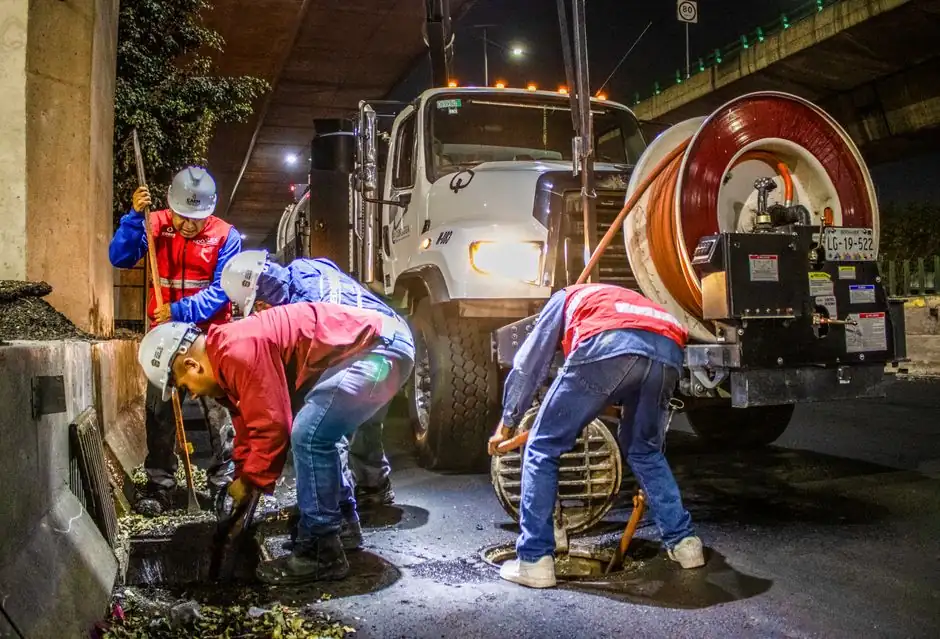
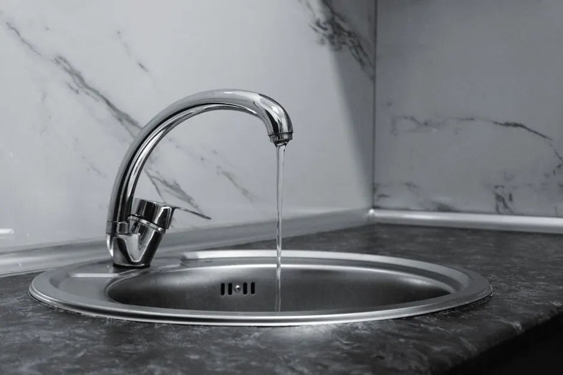
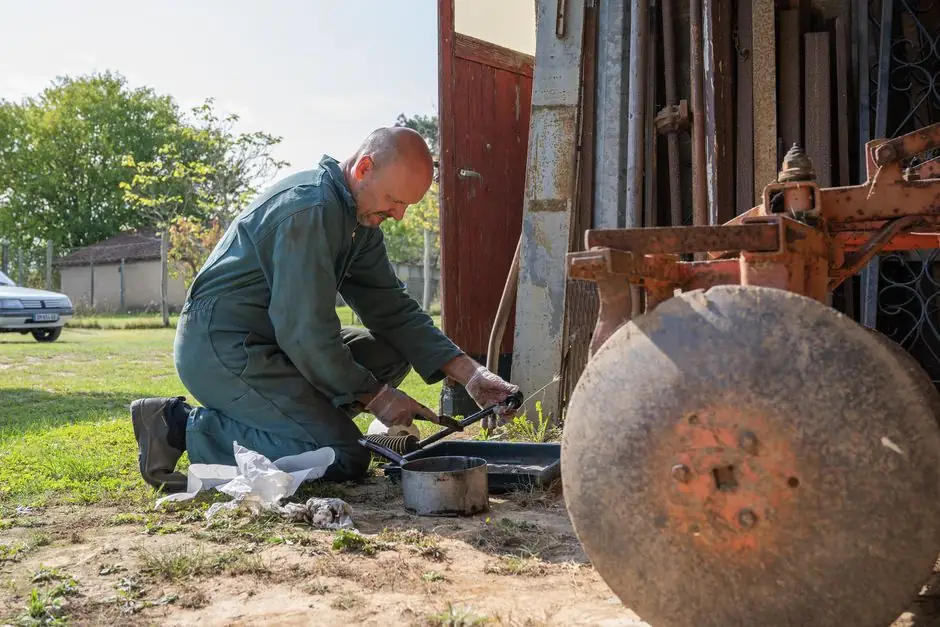

Live responseA real dispatcher, day or night

Your local team, ready to respond
Drain cleaning
in naples, Florida
Drain cleaning naples FL is essential for maintaining clear and functional plumbing. Our affordable sewer cleaning in naples ensures your home stays free of clogs and backups, providing peace of mind.
- 24/7 live dispatch
- Residential & commercial
- Options before work
✓
Current responseCrews routing now
Start here
What can we help with?
No obligation. A local dispatcher confirms the next available window.
Thanks — your request is in. Dispatch will contact you shortly.
Licensed teamQualified, insured technicians
Clear optionsScope and price before work
Clean finishProtect, repair, test, tidy
Work backedWritten workmanship promise


18years of local know-how
The local standard
Reliable Drain cleaning naples FL Services
Drain Cleaning Advisor has been serving the naples community since 2010, specializing in drain cleaning naples FL. Our experienced team provides prompt and efficient services tailored to your needs.
What sets us apart is our commitment to quality and quick response times. We are a licensed plumbing contractor, ensuring every job meets local codes. Whether you're in Old Naples or the Moorings, we provide 24/7 drain cleaning services.
Complete service support
Our Services That We Offer
Explore our full range of 24/7 emergency and scheduled drain and sewer solutions for homeowners and commercial properties across Naples, Florida.
01 Sewer

Sewer Cleaning
Comprehensive sewer line clearing and camera inspection to eliminate tree roots, heavy grease, and deep obstructions.
Explore Service →
02 Unclog

Clogged Drain Clearing
Fast unclogging for residential and commercial drains to restore smooth water flow and prevent dangerous overflows.
Explore Service →
03 Cabling

Drain Snaking & Cabling
Heavy-duty mechanical snake augers to clear stubborn hair, sludge, and debris trapped deep inside internal pipes.
Explore Service →
04 Jetting
Hydro Jetting Services
Ultra-high-pressure water scouring that strips hardened grease, mineral scale, sand, and roots down to bare pipe.
Explore Service →
05 Kitchen

Kitchen Sink Drain Clog
Rapid clearing for backed-up kitchen sinks, garbage disposals, and greasy branch lines in homes and restaurants.
Explore Service →
06 Leak

Drain Line Leak Repair
Pinpoint leak detection and long-lasting pipe repair to stop foundation damage, mold growth, and water loss.
Explore Service →
07 Repair

Drain Pipe Repair
Complete structural rehabilitation and pipe replacement for cracked, collapsed, corroded, or shifted lines.
Explore Service →
08 Shower
Shower & Tub Drain Clog
Quick removal of soap scum, hair clogs, and standing water in bathtubs and master walk-in showers.
Explore Service →
09 Air-Gap

Dishwasher Air-Gap Repair
Fix messy countertop spurting and prevent dirty drain backflow into your clean dishwasher appliance.
Explore Service →
10 French Drain
French Drain Services
Exterior yard, patio, and foundation drainage systems to channel heavy Florida storm runoff away from structures.
Explore Service →
11 Mainline

Mainline Drain Cleaning
Deep cleanout of the primary sewer line connecting your home or building to municipal sewage mains.
Explore Service →
12 Commercial

Commercial Drain Service
Heavy-duty drain maintenance and fast emergency response for restaurants, retail, offices, and hotels.
Explore Service →
13 Grate
Drain Grate Removal
Safe extraction and servicing of rusted, jammed, or stuck drain covers and commercial trap grates.
Explore Service →
14 Blockage
Pipe Blockage Clearing
Targeted removal of solid foreign obstructions, heavy scale, and sediment buildup choking pipe lines.
Explore Service →
15 Main Block

Mainline Blockage Clearing
Heavy equipment snaking and hydro jet clearing for severe main lateral blockages before sewage backs up.
Explore Service →
16 Main Clog
Main Drain Clog
Urgent diagnosis and clearing of main building discharge pipes to prevent hazardous blackwater backups.
Explore Service →
17 Ground Drain

Ground Drain Cleaning
Clearing driveway, patio, walkway, garage, and basement ground drains filled with dirt, sand, and foliage.
Explore Service →
18 Emergency
Sewer Backup & Flooding
24/7 urgent emergency intervention for active sewer backups and overflowing drains across Naples.
Explore Service →
19 Bathroom Sink
Bathroom Sink Slow Drain
Quick cleaning of pop-up stoppers and P-traps to eliminate foul odors and restore fast drainage flow.
Explore Service →
20 Broken Line
Broken Drain Line Repair
Durable repair and replacement for fractured, crushed, or disconnected drain pipes under slabs and lawns.
Explore Service →
21 Tub Backup
Tub & Shower Water Backup
Identify root causes and resolve dangerous water pooling and backflow beneath bathtubs and shower pans.
Explore Service →Not sure which service fits your situation? Call our Naples dispatch line directly for immediate guidance.
Describe the problemBrands we know and service
RheemMoenNavienKohlerDeltaBradford White
Why homeowners choose us
Why Choose Our Drain cleaning Services?
Choosing our drain cleaning services means opting for quality, speed, and reliability. We are committed to resolving your plumbing issues efficiently.

4.9Average local rating across hundreds of customer reviews
From call to all clear
How Our Drain cleaning Works
You always know what happens next, what needs your approval, and how we confirm the repair worked.
Initial Consultation
We start with a consultation to understand your specific plumbing issues. Our experts will assess the situation and recommend the best course of action.
Inspection
Using a pipe inspection camera, we identify the root cause of the blockage. This allows us to tailor our cleaning approach effectively.
Cleaning Process
We utilize advanced tools like hydro jetting equipment to clear clogs and restore flow. This method ensures your pipes are left clean and functional.
Final Check
After cleaning, we conduct a final inspection to ensure everything is running smoothly. Your satisfaction is our top priority.
Built around the property
Residential care. Commercial coordination.
The principles stay the same, but access, scheduling, documentation, and load change with the property.
Residential service
Practical repairs for occupied homes, rentals, condos, and HOA-managed properties.
- Flexible windows around family schedules
- Floor and work-area protection
- Repair versus replacement guidance
- Documentation for owners and property managers
Commercial service
Response plans for restaurants, retail, offices, multifamily buildings, and light industrial sites.
- Priority scheduling and after-hours coordination
- Phased work to limit business interruption
- Site contacts, access notes, and photo records
- Preventive and multi-location service plans
Start with what you notice
Common Drain Issues We Solve
We address a variety of drain problems that homeowners in naples face regularly.
Clogged kitchen sinks causing backups
Our drain cleaning services in naples use specialized tools to remove food debris and grease buildup, restoring proper drainage.
Slow drains in bathrooms
We provide affordable drain cleaning in naples to clear hair and soap scum clogs, ensuring your bathrooms function efficiently.
Sewer backups leading to unpleasant odors
Our sewer cleaning in naples resolves backups quickly, using hydro jetting to clear blockages and prevent future issues.
Real local feedback
What Our Customers Say
★★★★★
“The drain cleaning service was quick and effective! They fixed my clogged kitchen sink in no time.”
★★★★★
“I had a sewer backup that was a nightmare. Their team arrived fast and cleared it up without any hassle.”
★★★★★
“Affordable and reliable! I highly recommend their sewer cleaning services in naples.”
The whole local area
Service Areas in Naples
We proudly serve the vibrant community of naples, covering neighborhoods like Old Naples and the Moorings. Our sewer cleaning services are available throughout the area.
Check my address →
1234
Primary dispatch zoneSame-day response depends on current call volume, technician availability, and required equipment.
How every visit runs
Prepared for the repair behind the repair.
One standard, whatever the job turns out to be — from the first call to the final test.
Prepared arrival
The right equipment is on the truck before we reach your door — matched to the symptom you reported.
Diagnosis first
We confirm the real cause before any tool goes in — so you fix the problem, not the symptom.
Contained work
Floor protection, a tidy work area, and a careful cleanup on every visit.
Tested & documented
The result is re-tested and reviewed with you, with clear notes on what comes next.
Questions before we arrive
Frequently Asked Questions about Drain cleaning naples FL
Still unsure? A dispatcher can help identify the safest immediate step and the right appointment type.
Ask dispatch nowHow much does drain cleaning cost in naples?
Typical costs for drain cleaning in naples range from $129 to $399, depending on the severity of the blockage and the services required.
Who offers the best sewer cleaning in naples?
Drain Cleaning Advisor is known for providing the best sewer cleaning in naples, with a focus on quality and customer satisfaction.
What are the signs I need drain cleaning in naples?
Signs include slow draining water, frequent clogs, and foul odors. If you notice these, it's time to call for drain cleaning services.
How to find drain cleaning services near me in naples?
You can search online for 'drain cleaning services near me in naples' or contact us directly for prompt service.
Is emergency drain cleaning available in naples?
Yes, we provide 24/7 emergency drain cleaning services in naples to address urgent plumbing issues.
A problem does not improve with waiting
Need Immediate Drain cleaning naples FL?
Contact us today for fast and reliable drain cleaning naples FL. Our licensed team is ready to help you with any plumbing emergency.
Talk with the local team
Get in Touch with Us
We invite you to reach out for all your drain cleaning needs. Our team is available 24/7, and we respond quickly to all inquiries.